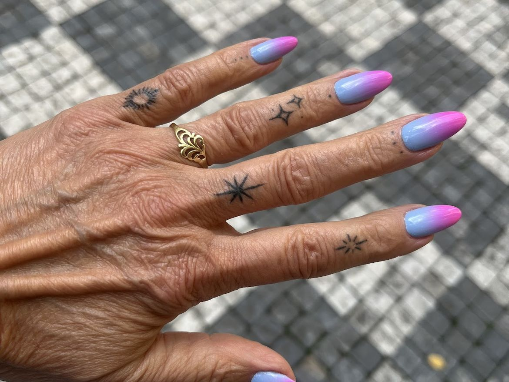
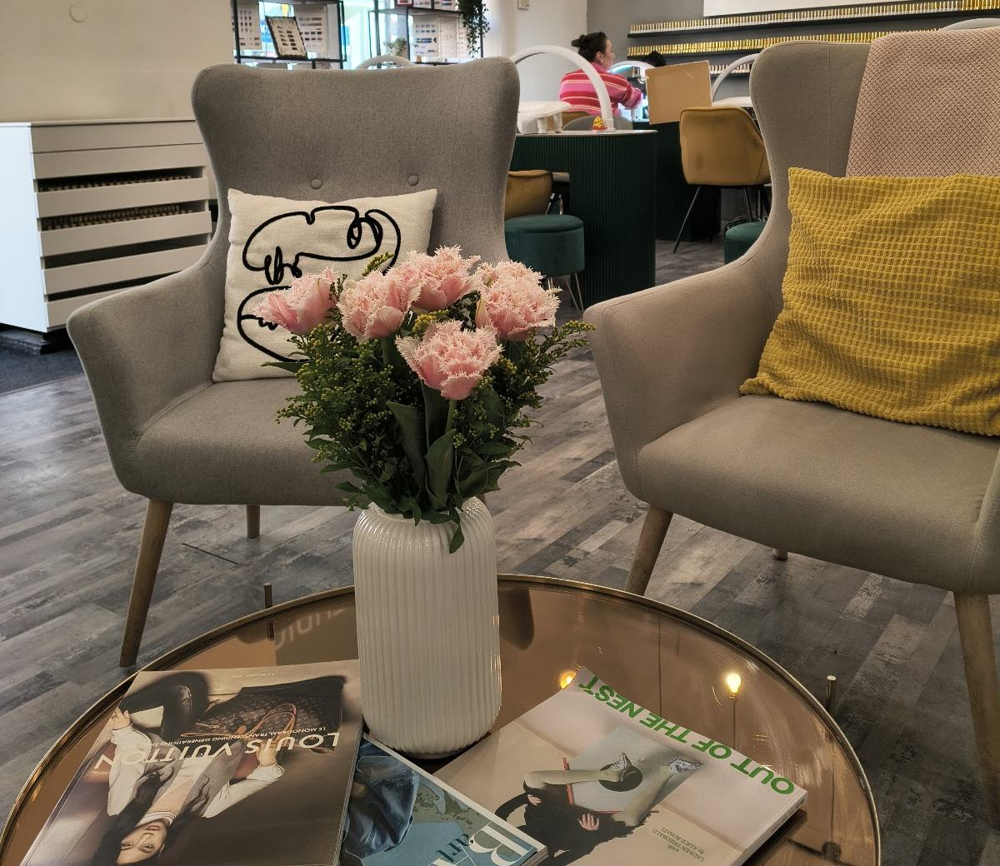

CHu. STUDIO
Manikúra, gelové nehty a nehtový design ve Vinohradech.
Chodí se na objednání. Zavolejte na 608 886 565.
Co vám uděláme
- Manikúra
- Gelové nehty
- Akryl
- Nehtový design a malování
- Francouzská manikúra
- Prodlužování řas
Vzorky barev máme na stěně, vyberete si na místě. Přineste fotku předlohy a nehty namalujeme podle ní.
Nehty, které odsud odešly
„Vždy si zde odpočinu a jakmile salon opustím, těším se na další termín.“
Karolína, Google
„Paní Hana se krásně stará o nehty a zvládla celý složitý design, o který jsem požádala.“
Helena, Google
„Slečna byla moc šikovná a pečlivá, nehty vypadají ještě líp než na referenčním obrázku.“
Ella, Google
„Všichni moc milí a nehty jsou nádherné.“
Martina, Google
„Nehtařka se vždy snaží vyjít vstříc. Všechny nástroje vysterilizované.“
Adéla, Google
Objednáváme se telefonicky
Bez objednání to nejde. Zavolejte a řekneme vám, kdy máme volno.
Korunní 1310/56, 120 00 Praha 2 – Vinohrady
608 886 565
Platíte kartou i telefonem.
- Po
- 9–19
- Út
- 9–19
- St
- 9–19
- Čt
- 9–19
- Pá
- 9–19
- So
- 10–18
- Ne
- zavřeno
